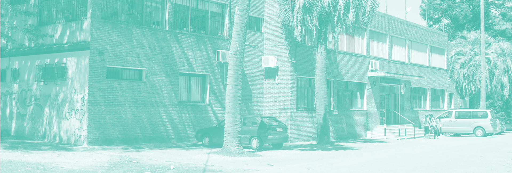
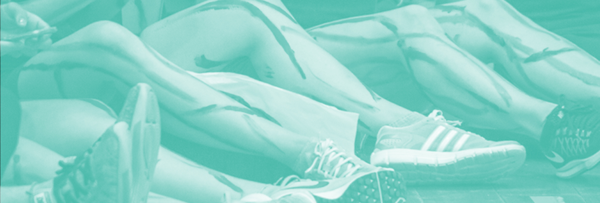
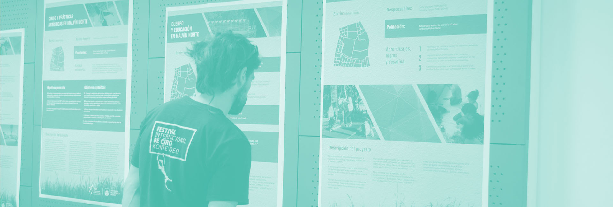

Ejes temáticos
Ejes temáticos
Estos son los ejes temáticos (click para ampliar).
La proyección de ISEF, en tanto Servicio universitario, requiere poner en el centro de los esfuerzos institucionales la consolidación de procesos, procedimientos, y modos del quehacer universitario; podríamos decir, requiere seguir construyendo una cultura institucional universitaria. Esta dimensión del funcionamiento institucional abarca aspectosfundamentales, asociados a la construcción de una cultura de la participación,del debate y de la toma de decisiones colectivamente, podríamos decir, de un modelo democrático de gobierno; así mismo, en tanto institución pública, exige la mayor rigurosidad en la utilización de los recursos presupuestales asignados. A partir del reconocimiento de los importantes avances logrados en estas materias, luego de que se produjese el pasaje de ISEF al ámbito universitario, en este primer eje se propone abordar aspectos fundamentales, tales como el fortalecimiento del cogobierno, o la mejora en el ordenamiento presupuestal, permitiendo una cada vez mayor planificación, organización y transparencia en el uso de los recursos. Al mismo tiempo, en la coyuntura actual de la Udelar, y siendo el único Servicio universitario que ha consolidado sus formaciones de grado en todo el país, requiere que nos interioricemos y participemos activamente en el proceso de departamentalización de losCENUR,buscando aportar a un proceso, fundamental para el desarrollo del país, de descentralización y regionalización de la Universidad de la República.
La proyección de la consolidación institucional, y la construcción de una cultura institucional universitaria, requieren el fortalecimiento de las estructuras de ISEF. Tanto desde el punto de vista de las infraestructuras disponibles a nivel nacional, como en lo que refiere a las estructuras de trabajadores y trabajadoras TAS y docentes, cualquier procesode construcción institucional requiere revisar y proyectar las necesidades, en consonancia con procesos más generales de la Udelar, al tiempo queseatiendenlascaracterísticasactualesde ISEF. Específicamente, entendemos fundamental concebir articuladamente las estructuras académicas de la institución (tanto las de los Departamentos Académicos, como las estructuras técnicas, administrativas y de servicio), su formación y posibilidades de ascenso, con una mirada atenta y rigurosa en las posibilidades presupuestales. Al mismo tiempo, y por algunas de las circunstancias actuales, y por la coyuntura institucional respecto a estos aspectos, resulta oportuno hacer coincidir estas proyecciones, con las vinculadas a las limitaciones de infraestructura. Vinculadas a las estructuras institucionales, y por esto proponemos que sea uno de los ejes estructurantes del Plan de desarrollo institucional, identificamos las principales limitaciones actuales y para la concreción de los objetivos institucionales que la Comisión Directiva de ISEF se ha venido planteando:laconsolidación del campo profesional y académico de la educación física, y la eliminación de las restricciones en el ingreso.
La producción de conocimiento y la formación para el ejercicio profesional son cometidos institucionales, establecidos por la Ley Orgánica de la Universidad de la República. Para un campo disciplinar como el de la educación física, tradicionalmente vinculado al ejercicio profesional, y solo recientemente buscando consolidar un campo académico,parecefundamentalproyectarlostrescomponentesqueseproponenenestetercer eje: la producción de conocimiento, la formación académica y la formación profesional. Se pretende a partir de allí, aportar al desarrollo de la de la enseñanza, la investigación y la extensión en el campo académico de la educación física, así como a la integralidad de las funciones, en clave de acceso democrático al conocimiento, la educación y la innovación. Esto está estrechamente vinculado con la posibilidad de fortalecer las ofertas de pregrado, grado y posgrado, desde una política de desarrollo que pretenda asegurar no sólo su acceso universal y libre, sino también la calidad de la enseñanza. Concomitantemente, se pretende poner en tensión los diálogosactualesentreelcampoacadémicoyelcampoprofesionaldela educación física, como dos espacios profundamenteinterrelacionados,ycómoelISEFpuede aportar a facilitar las vías de comunicación entre actores de ambos espacios desde sus actividades de enseñanza, investigación, extensión y gestión.
Muy probablemente,las profundas transformaciones institucionales que ha atravesado ISEF a partir de su transición al ámbito universitario, fueron posibles por las redes académicaseinterinstitucionalesqueleshandadososténylashanpotenciado.Introduciresta dimensión en un plan de desarrollo institucional permitirá sistematizar los esfuerzos realizados, la acumulacíon ya generada, y redimensionarlos. De este modo, los vínculos con otros servicios universitarios y otras universidades a nivel nacional, regional einternacional, el trabajo con otras instituciones públicasyprivadas,yproyeccióndeuntrabajoterritorialen diálogo con actores sociales, son claves para establecer objetivos institucionales sólidos, y definir acciones que permitan alcanzarlos. Estas líneas de trabajo podrían considerar, de manera coordinada y articulada, la consolidación y ampliación de las redes nacionales, regionales e internacionales; la definición y el impulso a una activa políticadeconvenios;el estímulo a la participación activa en programas de movilidad académica (de grado, de posgrado y técnicos); el fortalecimiento y ampliación de los vínculos con organizaciones de la sociedad civil; u otros.
Durante los últimos años, la Universidad de la República ha transitado un arduo camino dereconocimientodelanecesidaddeatenderlaconstruccióndeentornosdetrabajoy de estudio que aseguren los derechos de todas y todos. Desde el despliegue de estrategias para la prevención y atención a situaciones de acoso en el estudio y/o en el trabajo,pasando por la construcción de espacios de cuidados y espacios recreativos que contribuyan a revertir situaciones de desigualdad estructurales que dificultan el desarrollo de las tareas de trabajadores, trabajadoras y estudiantes, la Udelar ha generado una acumulación importante enlamateriaqueproponemosabordarenesteejeestructurantedelPlandedesarrollodeISEF para el período 2020-2025. Entendemos que realizar una proyección institucional que no atienda la necesidad de definir una política que asegure el ejercicio de los derechos de quienes hacemos parte de ISEF, implicaría una omisión significativa; dicho de otro modo, partimos del supuesto dequeenlaactualcoyunturainstitucionalresultapertinentecolocaren el centro del debate este componente fundamental del funcionamiento cotidiano, ydelmodo en que se construyen las relaciones entre quienes trabajamos y/o estudiamos en ISEF, buscando hacer sinergia con las herramientas que la propia Udelar tiene a disposición. Proponemos un intercambio que haga énfasis en la reflexión sobre acciones estratégicasque se destinen a la atención de personasensituacióndevulnerabilidadodesigualdadsocial,con foco en las políticas de género, discapacidad, migración, y atención a personas en situación de privación de libertad.